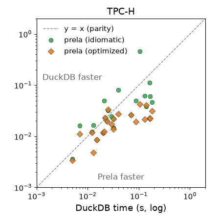
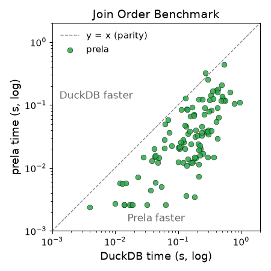

"The calculus of relations has an intrinsic charm and beauty which makes it a source of intellectual delight to all who become acquainted with it." —Alfred Tarski
Prela is an embedded query language focusing on compositionality and control. Its queries are concise, clear, and fast. It is implemented as a library of query combinators (think parser combinators), allowing the user to freely intermix queries with code in the host programming language. The implementation follows continuation-passing style, resulting in a core engine under 1k lines of code that compiles to efficient columnar execution. Unlike almost all SQL databases, Prela does not come with its query optimizer, and queries are executed exactly as they are written. This gives the user complete control over all aspects of query planning, including join ordering, operator pushdown, materialization, and selection of physical data structures. Nevertheless, the most idiomatic way to write a query already performs well in our experiments.
Note
Prela is a research prototype in early development. Expect constant and sweeping changes to both language design and implementation.
Consider Join Order Benchmark 22a:
movie.with(info.select(Info::ty.eq("countries")
.and(Info::info.is_in(["Germany", "German", "USA", "American"])))
.and(keyword.is_in(["murder", "murder-in-title", "blood", "violence"]))
.and(production_year.gt(2008))
.and(kind.is_in(["movie", "episode"])))
.select(title
.and(data.with(Data::text.lt("7.0")
.and(Data::ty.eq("rating"))).text())
.and(company.with(Company::note.nrx(r"\(USA\)")
.and(Company::note.rx(r"\(200.*\)"))
.and(country.ne("[us]"))
.and(Company::ty.eq("production companies"))).name()))Intuitively, the query looks for movies satisfying
several conditions:
Then, for each such movie, output the following attributes:
In SQL's way of thinking, movie would be in the
FROM clause (along with other tables involved),
with corresponds to the WHERE clause,1 and select corresponds
to the SELECT clause. But unlike SQL, Prela can freely
interleave predicates and outputs, resulting in more natural queries as
shown above. You can also think of data.with(...).text()
and company.with(...).name() parts as subqueries
which require special syntax in SQL, but are just subexpressions in
Prela. And instead of explicit conditions, joins in Prela are reflected
by the structure of the query in a navigational style.
To understand what's going on under the hood, we should first clarify the data model used by Prela. The theoretical foundation of Prela is a formalism of relations 100 years older than the familiar relational algebra, called (confusingly) relation algebra. To avoid confusion, I will call it Tarski's Algebra of Relations (TAR) after the logician responsible for its modern formalization. In TAR (and therefore Prela), everything is a binary relation, and a query is built up with operators that take in and produce binary relations, which I call relation combinators. One way to think about this is a very extreme form of normalization: every table with k columns is "shredded" into k binary tables, one per column.
Let us consider a simplified version of the query above:
movie.with(production_year.gt(2008)).select(title)Here, title and production_year are both
attributes of the same table in the original schema, but in Prela, each
of them becomes a binary relation, mapping every movie (ID) to its title
and production year, respectively. movie is also a binary
relation, albeit a little special: it corresponds to the primary-key ID
column of the original table, and is the identity relation over
the IDs; in other words, movie contains (i, i)
for every ID i in the table. Overall, each "column table"
can be thought of as a map from the primary key to its corresponding
value.
Comparisons like .gt() and .is_in() are
regular Rust methods on relations. For example,
production_year.gt(2008) returns a binary relation that's a
subset of production_year, such that the second column (the
"value" column) contains only values greater than 2008.
Next, .with() is the restriction combinator:
r.with(s) restricts the last column of the r
with the first column of the s; i.e., it is exactly a
left-semijoin. In this example,
movie.with(production_year.gt(2008)) semijoins
movie with the filterd-out production_year
relation, and since movie is the identity relation, we're
left with the IDs for movies made after 2008.
The .select() combinator is relational
composition. It is the workhorse of both Prela and TAR. The key to
understanding relational composition is to view relations as a
generalization of functions: a binary relation of type
(X, Y) generalizes a function of type
X -> Y by allowing multiple different "output"
(Y) values per "input" (X). For this reason,
we will abuse X -> Y to denote the type of a binary
relation.
From this perspective, it is then natural to see select
as a generalization of the function composition (\(f \circ g\)): r.select(s)
first "applies" r to each x to get a bunch of
y, then for each y, apply s to
get a bunch of z.
In math: \(R \circ S = \lbrace (x, z) \mid \exists y . (x, y) \in R \land (y, z) \in S \rbrace\). In standard relational algebra: \(R \circ S = \pi_{x, z}(R \Join_{R.y = S.y} S)\) where R's schema is over x and y, and S's schema is over y and z.
Going back to our example, .select() takes two
inputs:
movie.with(production_year.gt(2008)), which has all
movies after 2008 and is of type Movie -> Movietitle which has type
Movie -> StringTheir composition then produces an output of type
Movie -> String, namely, a mapping from each qualifying
movie to its title.
Another (perhaps more natural) way to think about all these is to
pretend every movie is a JSON object called movie, and its
attributes like title and production_year are
JSON attributes, then .select() will feel like field
access, and .with() lets you specify filters.
There is one more construct in our original example, namely the
product combinator .and(). It takes two relations
of types X -> Y and X -> Z, and joins
them on X to produce an output of type
X -> (Y, Z). When used as a conjunction in the
with clause, product allows us to combine different
predicates:
.and(production_year.gt(2008))
.and(kind.is_in(["movie", "episode"])))When used in select, it combines different columns in
the output: in the full example, we output title, data (with additional
filters), and company name - the last because
company.with(...).name() computes a relation of type
Movie -> String mapping each movie to its company's
name.
Since Prela is directly embedded in the host language, we can borrow many constructs from the host to get many features that are considered advanced in other query languages, for free. Consider TPCH q21:
let late = lineitem.with(commitdate.and(receiptdate).filt(|(c, r)| c < r));
// EXISTS another supplier on the order (across all lineitems)
let multi_supp = Lineitem::supplier.group_by(order).count_distinct().gt(1);
// NOT EXISTS another LATE supplier (only L1 is late)
let only_late = (&late).select(Lineitem::supplier)
.group_by((&late).select(order))
.count_distinct().eq(1);
let saudi = supplier.and(Supplier::nation.eq("SAUDI ARABIA"));
let f_ords = orders.and(Order::status.eq("F"));
let qualifying = (&late)
.with(Lineitem::supplier.select(saudi)
.and(order.select(f_ords.and(multi_supp).and(only_late))));
let counts = qualifying.group_by(Lineitem::supplier).fold(0_i64, |a, _| a + 1);The let bindings assign sub-queries to variables — which
would require CTEs in SQL, but is simply a variable binding in
Prela/Rust. Where SQL needs a UDF, Prela passes an ordinary closure,
e.g., the predicate in .filt(|(c, r)| c < r) and the
accumulator |a, _| a + 1 passed to fold.
The next new Prela construct excercised by this query is group-by
aggregation. Let's focus on the expression
Lineitem::supplier.group_by(order).count_distinct().gt(1).
You can probably guess it corresponds to the SQL query:
SELECT order, supplier
FROM lineitem
GROUP BY order
HAVING COUNT DISTINCT(supplier) > 1In SQL, GROUP BY, HAVING, and
COUNT must all come together, and missing a clause triggers
a parse error. But in our Prela query, .group_by(),
count_distinct(), and .gt() are just regular
Rust functions, so how do we make sure all of them are called together?
We don't.
To understand how things work, we shall first introduce one more
combinator, the inverse .inv(): it just flips the columns
of R, so if R: X -> Y, then
R': Y -> X, like how you invert a function.
Now, back to the query: s.group_by(r) is short hand for
"compose with inverse": Lineitem::supplier.group_by(order)
means order.inv().select(Lineitem::supplier). Here, the
order relation has type Li -> Order, so its
inverse has type Order -> Li and maps each order to the
lineitem. Then, Lineitem::supplier has type
Li -> Supplier, so the composition has type
Order -> Supplier, mapping each order to its supplier.
Next, each aggregation operator, .fold(),
.buf_fold(), .count_distinct(), groups its
receiver by the first column, and computes the aggregate over the second
column using the supplied function. In our case, we group the suppliers
by order, then count the number of distinct suppliers per group.
Finally, .gt(1) works as before and filters the relation to
keep the orders that are supplied by more than 1 distinct suppliers,
which corresponds to the HAVING clause in SQL but requires
no special treatment in Prela. Grouping may appear limiting as it "can
only group by one attribute", but that is not true - grouping by
multiple attributes can be achieved by grouping by a product! I'll leave
that as an excercise for the reader.
If implemented naively, Prela would be pretty slow. Indeed, the first prototype was around 100x slower than DuckDB! The naive implementation literally had each combinator take in and produce relations, which leads to a lot of materialized intermediates that are only filtered down later on. There are two standard solutions in DB to this problem: implement the iterator model and vectorize it to make it fast, or compile the query into low-level code running tight loops. Both approach involve significant effort. To be honest, I almost gave up at that point, because building a vectorized or compiled DB is much too large of a scope. Until I remembered some dark magic I picked up from my functional programming days - continuation-passing style (CPS). Actually, I never really understood CPS until working on Prela, and when it clicked, I literally cried because the idea was so beautiful! I've written more about it here. Long story short, CPS allows each combinator to be implemented in a few lines in a modular way, yet compiling to code that recovers efficient columnar execution.
Some consider the query optimizer to be the heart of a database,
transforming high-level queries into fast, executable code. I've also
spent my graduate school years working on query optimizers, so it's
probably quite surprising that Prela doesn't have one. In other words, a
Prela query is also a query plan. Each query will be executed
exactly as it is written, giving the programmer complete control over
every aspect of query performance. Physical data structures can be
selected with type annotations, and materialization points specified by
calls to .collect(). I will write more about that later,
but for now, treat yourself to the queries here: see rust/src/queries/ for all 113 JOB
queries, and rust/src/tpch/common.rs for
TPC-H.
The plots below compare Prela against DuckDB 1.5.3 (1 thread) as baseline, over TPC-H and the Join Order Benchmark. On JOB, Prela runs the 113 queries in 5.2s vs DuckDB's 15.3s (3.0× faster, winning 99 of 113). On TPC-H SF=1, idiomatic Prela is within ~1.3× of DuckDB's vectorized engine (1.14s vs 0.86s), and an optimized variant beats it by ~2× (0.44s).


Sadly where is reserved in Rust.↩︎